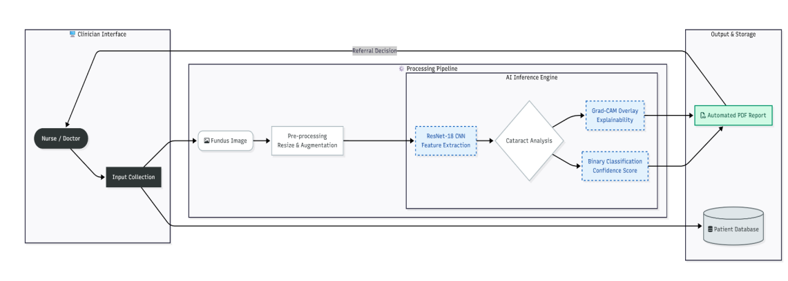

InSight: automated cataract screening system
InSight is an open-source clinical decision support system (CDSS) that detects cataracts in ocular fundus (retinal) images. It uses a ResNet-18 convolutional neural network (CNN) for binary classification and Gradient-weighted Class Activation Mapping (Grad-CAM) saliency maps to explain each result.
The clinical challenge and solution
Cataracts are the leading cause of preventable blindness worldwide, and they disproportionately affect regions with a shortage of trained ophthalmologists.
| Challenge | How InSight addresses it |
|---|---|
| Delayed diagnosis | Automated screening lets nurses and general practitioners triage patients at the point of care. |
| Limited trust in opaque AI | Each prediction includes a Grad-CAM overlay that highlights the image regions that influenced the result. |
| Non-medical input errors | A MobileNetV2 gatekeeper model rejects non-retinal uploads before inference. |
| Workflow disconnect | The system provides an end-to-end screening workflow with automated PDF reports and audit logging. |
System architecture
InSight runs as a microservice and uses a service-oriented architecture to separate machine learning inference from the clinical interface:
- Presentation layer: A Streamlit dashboard for clinicians. It supports single and batch uploads, patient lookup, and analytics.
- Application layer: An asynchronous FastAPI backend that runs the MobileNetV2 gatekeeper, the PyTorch ResNet-18 model, and Grad-CAM computation.
- Data and authentication layer: Supabase-managed PostgreSQL storage with role-based access control (RBAC) that separates nurse and physician roles.

Quickstart and local setup
To run the inference backend and the clinician dashboard locally, follow these steps.
Prerequisites
- Python 3.9 or later
- Git
Clone the repository
git clone https://github.com/nyambura-pov/InSight_Cataract_Detection.git
cd InSight_Cataract_Detection
Create a virtual environment and install dependencies
Configure credentials
Create a .streamlit/secrets.toml file in the project root and add your Supabase credentials:
Replace the following:
PROJECT_ID: The ID of your Supabase project.SUPABASE_ANON_KEY: The anonymous (anon) public key of your Supabase project.
Start the services
Start the FastAPI inference server:
In a second terminal, start the clinician dashboard:
In a browser, go to http://localhost:8501.
Model performance
The ResNet-18 model was trained on the Ocular Disease Intelligent Recognition (ODIR-5K) dataset. To address class imbalance, training used focal loss (γ = 2.0). The following table shows results on a held-out test split of 1,098 fundus images.
| Metric | Score | What it measures |
|---|---|---|
| Recall (sensitivity) | 99.40% | The proportion of cataract cases that the model correctly flags. A higher value means fewer missed cases. |
| Precision | 99.00% | The proportion of flagged cases that are true cataracts. |
| Accuracy | 99.52% | The proportion of all predictions that are correct. |
| F1 score | 0.992 | The harmonic mean of precision and recall. |
| AUC-ROC | 0.998 | How well the model separates cataract from non-cataract images across all decision thresholds. |
Scope of these results
These results come from one held-out split of a single public dataset. They don't measure performance on images from other cameras, populations, or clinical settings.
Related documentation
- Clinical operator guide: Screening workflow, Grad-CAM interpretation, and referral report export for clinical staff.
- Developer and API guide: Specification for the
POST /predict/endpoint, including request parameters, response schemas, database side effects, and HTTP error states.
License and clinical use
InSight is distributed under the MIT License.
Clinical use disclaimer
InSight is a clinical decision support system (CDSS) for frontline triage. It assists healthcare providers and doesn't replace diagnosis by a licensed ophthalmologist.